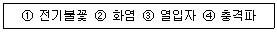
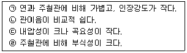

가스산업기사 (2005-03-20 기출문제)
1과목: 연소공학
1. 급격한 압력의 발생 또는 해방의 결과로 가스가 폭음을 수반하며 격렬하게 팽창하는 현상을 무엇이라고 하는가?
- 폭발
- 분출
- 분해연소
- 자연발화
(정답률: 97%)

2. 다음은 폭굉을 일으킬 수 있는 기체가 파이프 내에 있을 때 폭굉 방지 및 방호에 관한 내용이다. 옳지 않은 사항은?
- 파이프의 지름대 길이의 비는 가급적 작도록 한다.
- 파이프 라인에 오리피스 같은 장애물이 없도록 한다.
- 파이프 라인을 장애물이 있는 곳은 가급적이면 축소한다.
- 공정 라인에서 회전이 가능하면 가급적 완만한 회전을 이루도록 한다.
(정답률: 81%)
3. 증기폭발(Vapor expiosion)에 관한 설명 중 옳은 것은?
- 수증기가 갑자기 응축하여 그 결과로 압력 강하가 일어나 폭발하는 현상
- 가연성 기체가 상온에서 혼합 기체가 되어 발화원에 의하여 폭발하는 현상
- 가연성 액체가 비점 이상의 온도에서 발생한 증기가 혼합기체가 되어 폭발되는 현상
- 뜨거운 액체가 차가운 액체와 접촉할 때 찬 액체가 큰 열을 받아 증기가 발생하여 증기의 압력에 의한 폭발현상
(정답률: 68%)
4. 다음은 수소의 성질을 설명한 것이다. 틀린 것은?
- 고온에서 금속산화물을 환원시킨다.
- 불완전연소하면 일산화탄소가 발생된다.
- 고온,고압에서 철에 대해 탈탄작용(脫炭作用)을 한다.
- 염소와의 혼합기체에 일광(日光)을 비추면 폭발적으로 반응한다.
(정답률: 70%)
5. 0.5 atm, 10L의 기체 A와 1.0 atm, 5L의 기체 B를 전체부피 15L의 용기에 넣을 경우, 전압은 얼마인가? (단, 온도는 항상 일정하다.)
- 1/3 atm
- 2/3 atm
- 1.5 atm
- 1 atm
(정답률: 82%)
6. 다음 중 연소의 3요소에 해당되는 사항이 아닌 것은?
- 산소
- 정전기 불꽃
- 질소
- 수소
(정답률: 97%)
7. 1기압 20L의 공기를 4L 용기에 넣었을 때 산소의 분압은 얼마인가? (단, 압축시 온도변화는 없고, 공기는 이상기체로 가정하며, 공기중 산소의 백분율은 20%로 가정한다.)
- 1기압
- 2기압
- 3기압
- 4기압
(정답률: 65%)
8. 메탄 60%, 에탄 20%, 프로판 15%, 부탄 5%인 혼합가스의 공기 중 폭발 하한계(%)는 약 얼마인가? (단, 각 성분의 하한계는 메탄5.0%, 에탄 3.0%, 프로판 2.1%,부탄 1.8%로 한다.)
- 2.5
- 3.0
- 3.5
- 4.0
(정답률: 76%)
9. 다음은 연소에 관한 설명이다. 틀린 것은?
- 가연성 물질의 환원 과정이다.
- 자발적으로 반응이 계속 된다.
- 발열반응에 의해 열을 발생한다.
- 연소범위는 온도나 압력에 따라 달라진다.
(정답률: 65%)
10. 일정량의 기체의 체적은 온도가 일정할 때 어떤 관계가 있는가? (단, 기체는 이상기체로 거동한다.)
- 비열에 반비례한다.
- 압력에 반비례한다.
- 압력에 비례한다.
- 비열에 비례한다.
(정답률: 80%)
11. 다음 물질 중 분진폭발과 가장 관계가 깊은 것은?
- 소백분
- 에테르
- 탄산가스
- 암모니아
(정답률: 83%)
12. 가연성 가스의 연소범위에 대한 설명 중 옳은 것은?
- 폭굉에 의한 폭풍이 전달되는 범위
- 폭굉에 의해 피해를 받는 범위
- 공기 중 연소할 수 있는 가연성 가스의 농도 범위
- 가연성 가스와 공기의 혼합기체가 연소하는데 필요한 혼합기체의 압력범위
(정답률: 79%)
13. 다음 중 폭발의 발화원이 될 수 있는 것들로 짝지워진 것은?

- ①
- ①,②
- ①,②.③
- ①,②,③,④
(정답률: 65%)
14. 다음은 예혼합연소를 설명한 것이다. 잘못된 것은?
- 전형적인 층류예혼합화염은 원추상 화염이다.
- 난류연소속도는 연료의 종류, 온도, 압력에 대응하는 고유값을 갖는다.
- 층류예혼합화염의 경우 대기압에 의한 화염두께는 대단히 얇다.
- 난류예혼합화염은 층류화염보다 휠씬 높은 연소속도를 가진다.
(정답률: 63%)
15. 다음 중 가열만으로도 폭발의 우려가 있는 물질은 무엇인가?
- 에틸렌글리콜
- 산화철
- 수산화나트륨
- 산화에틸렌
(정답률: 77%)
16. 다음 설명 중 틀린 것은?
- 층류 연소속도는 온도에 따라 결정된다.
- 층류 연소속도는 압력에 따라 결정된다.
- 층류 연소속도는 연료의 종류에 따라 결정된다.
- 층류 연소속도는 흐름 상태에 따라 결정된다.
(정답률: 71%)
17. 아래 반응식을 이용하여 C2H2(g)의 생성열 복원중을 계산하면 얼마인가? (반응식이 오류로 복원중입니다. 정확한 내용을 아시는 분께는 오류신고를 통하여 내용작성 부탁드립니다. 정답은 3번입니다.)
- 148.26kcal/g-mol
- 190.83kcal/g-mol
- 54.21kcal/g-mol
- -472.18kcal/g-mol
(정답률: 83%)
18. 가연성 증기속에 수분이 많이 포함 되어 있을때 일어나는 현상이 아닌 것은?
- 수격작용 유발 가능성이 높다.
- 증기 엔탈피가 감소한다.
- 열효율 저하된다.
- 건조가 높아진다.
(정답률: 89%)
19. (CO2)max는 연료가 연소하여 생성될 수 있는 최대의 이산화탄소율을 나타낸다. 그러면 (CO2)max(%)는 공기비(m)가 어떤 때를 기준으로 하는가?
- m = 0
- m = 1
- m = 2
- 아무 관계가 없다.
(정답률: 86%)
20. 완전가스에 대한 설명으로 틀린 것은?
- 완전가스는 분자 상호간의 인력을 무시한다.
- 완전가스에 가까운 실제기체로는 H2, He등이 있다.
- 완전가스는 분자 자신이 차지하는 부피를 무시한다.
- 완전가스는 저온, 고압에서 보일-샤를의 법칙이 성립한다.
(정답률: 69%)
2과목: 가스설비
21. 조정기(Regulator)의 사용 목적은?
- 유량조절
- 발열량조절
- 가스의 유속조절
- 가스의 유출압력조절
(정답률: 59%)
22. 성능계수가 3.2 인 냉동기가 10ton 의 냉동을 하기 위하여 공급하여야 할 동력은?
- 10kW
- 12kW
- 14kW
- 16kW
(정답률: 77%)
23. 자동절체식 조정기를 사용할 때 잇점에 해당하지 않는 것은?
- 잔액이 거의 없어질 때까지 가스를 소비할 수 있다.
- 전체용기의 개수가 수동 절체식보다 적게 소요 된다.
- 용기교환 주기의 폭을 넓힐 수 있다.
- 일체형을 사용하면 단단감압식 조정기의 경우보다 압력 손실을 크게 하여도 된다.
(정답률: 60%)
24. 일반소비기기용, 지구정압기로 널리 사용되며 구조와 기능이 우수하고 정특성이 좋지만 안전성이 부족하고 크기가 다른 것에 비하여 대형인 정압기는?
- 피셔식
- AFV식
- 레이놀드식
- 서비스식
(정답률: 78%)
25. 정압기의 정특성에 대한 설명으로 옳지 않은 것은?
- 정상상태에서의 유량과 2차 압력의 관계를 뜻한다.
- Lock-up 이란 폐쇄압력과 기준유량일때의 2차압력과의 차를 뜻한다.
- 오프셋 값은 클수록 바람직하다.
- 유량이 증가할수록 2차압력은 점점 낮아진다.
(정답률: 75%)
26. 배관의 관경을 50cm에서 25cm로 변화시키면 일반적으로 압력손실은 몇 배가 되는가?
- 2배
- 4배
- 16배
- 32배
(정답률: 81%)
27. 가스액화 분리장치를 구성하는 장치로서 가장 거리가 먼 것은?
- 한냉 발생장치
- 정류(분축,흡수)장치
- 내부연소식 반응장치
- 불순물 제거장치
(정답률: 77%)
28. 가스 분출시 정전기가 가장 발생하기 쉬운 경우는?
- 다성분의 혼합가스인 경우
- 가스중에 액체나 고체의 미립자가 섞여 있는 경우
- 가스의 분자량이 적은 경우
- 가스가 많이 건조해 있을 경우
(정답률: 83%)
29. 물 27kg 를 모두 전기분해하여 산소를 제조하여 내용적 40ℓ의 용기에 0℃, 150kg/cm2 까지 충전하고자 할 때 필요한 용기수는?
- 3개
- 6개
- 7개
- 9개
(정답률: 51%)
30. 다음 중 터보형 펌프가 아닌 것은?
- 원심식
- 사류식
- 축류식
- 회전식
(정답률: 61%)
31. 금속 재료에서 어느 온도 이상에서 일정 하중이 작용할 때 시간의 경과와 더불어 그 변형이 증가하는 현상을 무엇이라고 하는가?
- 클리이프
- 시효경과
- 응력부식
- 저온취성
(정답률: 80%)
32. 어떤 설비의 상용압력이 320kg/cm2 일 때 안전밸브의 최고 작동 압력은?
- 480kg/cm2
- 426kg/cm2
- 384kg/cm2
- 360kg/cm2
(정답률: 46%)
33. 고압가스 용기의 안전밸브중 밸브 부근의 온도가 일정 온도를 넘으면 휴즈 메탈이 열려서 가스를 전부 방출시키는 방식은?
- 가용전식
- 스프링식
- 파괴막식
- 수동식
(정답률: 69%)
34. 내용적 10m3 의 액화산소 저장설비(지상설치)와 제1종 보호시설과 유지해야 할 안전거리는? (단, 액화산소의 상용온도에서의 액화비중:1.14 로 본다.)
- 7 m
- 9 m
- 14 m
- 21 m
(정답률: 72%)
35. 도시가스제조 원료의 저장 설비에서 액화석유가스(LPG) 저장법으로 옳은 것은?
- 가압식저장법, 저온식(냉동식)저장법
- 고온저압식저장법, 저온식(냉동식)저장법
- 가압식저장법, 고온증발식저장법
- 고온저압식저장법, 예열증발식저장법
(정답률: 80%)
36. 다음 중 주철관과 비교한 강관의 특징으로 옳은 것을 모두 고른 것은?

- ㉠, ㉡
- ㉠, ㉢
- ㉡, ㉢
- ㉡, ㉣
(정답률: 42%)
37. 흐름의 방향이 역류하는 것을 차단하는 밸브는?
- 글로우브 밸브
- 게이트 밸브
- 플러그 밸브
- 체크 밸브
(정답률: 65%)
38. 펌프의 공동현상(Cavitation) 발생에 따라 일어나는 현상이 아닌 것은?
- 진동과 소음이 생긴다.
- 임펠러의 침식이 생긴다.
- 토출량이 점차 감소한다.
- 양정효율이 증가한다.
(정답률: 76%)
39. 압축기의 가스별 내부 윤활유로 옳지 않게 짝지은 것은?
- 수소 - 양질의 광유
- 아세틸렌 - 양질의 광유
- 이산화황 - 화이트유
- 산소 - 디젤 엔진유
(정답률: 64%)
40. 고압가스용기 밸브의 구조에 따른 종류에 해당하지 않는 것은?
- 패킹식
- 글로우브식
- 백 시트식
- 0 링식
(정답률: 49%)
3과목: 가스안전관리
41. 주택은 제 몇종 보호시설로 분류되는가?
- 제0종
- 제1종
- 제2종
- 제3종
(정답률: 85%)
42. 압축된 기체를 단열팽창시켰을 때 온도의 변화는?
- 올라간다.
- 내려간다.
- 변하지 않는다.
- 상황에 따라 다르다.
(정답률: 62%)
43. 고압가스 충전용기 또는 접합용기에 충전하여 포장한 것을 운반차량에 표시하는 용어로 바른 것은?
- 주의고압가스
- 위험고압가스
- 고압가스주의
- 고압가스 운반차량
(정답률: 73%)
44. 다음 포스겐가스(COCl2)를 취급할 때의 주의사항으로 옳지 않은 것은?
- 취급시 반드시 방독마스크를 착용할 것
- 공기보다 가벼우므로 보관장소의 환기시설은 윗쪽에 설치할 것
- 사용후 폐가스를 방출할 때에는 중화시킨후 옥외로 방출시킬 것
- 취급장소는 환기가 잘되는 곳일 것
(정답률: 71%)
45. 에어졸 제조 시 금속제 용기의 두께는 얼마 이상이어야 하는가?
- 0.⑤㎜
- 0.1㎜
- 0.125㎜
- 0.2㎜
(정답률: 66%)
46. 액화석유가스 시설의 배관은 상용압력의 얼마이상의 압력에 항복을 일으키지 아니하는 두께이상이어야 하는가?
- 1배
- 1.5배
- 2배
- 2.5배
(정답률: 49%)
47. 압력방폭구조의 표시는?
- Exp
- Exd
- Exi
- Exs
(정답률: 91%)
48. LPG용 가스렌지를 사용하는 도중 불꽃이 치솟아 사고가 발생되었을 시 가장 직접적인 사고 원인은?
- 가스누출자동차단기 미작동
- T 관으로 가스누출
- 조정기 불량
- 연소기의 연소불량
(정답률: 61%)
49. 시안화수소를 용기에 충전할 때 안정제로서 무엇을 첨가하는가?
- 탄산가스 또는 일산화탄소
- 메탄 또는 에틸렌
- 질소
- 아황산가스 또는 황산
(정답률: 60%)
50. 독성가스 제해설비 설치 대상가스가 아닌 것은?
- 아황산가스
- 염화메탄
- 산화에틸렌
- 아세틸렌
(정답률: 33%)
51. 자동차 용기 충전시설에서 충전용 호스의 끝에 설치하여야 하는 것은?
- 긴급차단장치
- 가스누출경보기
- 정전기 제거장치
- 인터록 장치
(정답률: 80%)
52. 부피 함유율이 C3H8 :10%, CH4 :70%, H2 :15%, O2 :5% 인 혼합가스의 연소 속도는? (단, 가스의 비중은 0.6, K = 1.2로 한다.)
- 60.1cm/s
- 65.1cm/s
- 70.1cm/s
- 75.1cm/s
(정답률: 69%)
53. 가연성 액화가스 저장탱크에서 가스누출에 의해 화재가 발생했다. 대책으로 가장 거리가 먼 것은?
- 즉각 송입 펌프를 정지 시킨다.
- 즉각 저조 내부의 액을 방류둑내에서 플로우 - 다운(flow-down) 시킨다.
- 살수 장치를 작동시켜 저장탱크를 냉각한다.
- 소정의 방법으로 경보를 울린다.
(정답률: 75%)
54. 이음매 없는 용기 제조 시 탄소함유량은 얼마 이하를 사용하여야 하는가?
- 0.04 %
- 0.⑤ %
- 0.33 %
- 0.55 %
(정답률: 64%)
55. 독성가스는 허용농도 얼마 미만인 경우 용기승하차용 리프트와 밀폐된 구조의 적재함이 부착된 전용차랑으로 운반하여야 하는가?
- 천분의 1
- 만분의 1
- 10만분의 1
- 100만분의 1
(정답률: 50%)
56. 가스폭발 시 목조건물에 대한 폭풍압이 0.6 ‾ 0.7 kg/㎝2일 경우 나타나는 현상으로 가장 옳은 것은?
- 창 유리가 갈라진다.
- 창틀이 파손된다.
- 가옥의 뼈대가 들려지고 기둥이 부러진다.
- 땅이 솟아오른다.
(정답률: 67%)
57. 가스홀더, 가스발생기는 외면으로부터 사업장의 경계까지 거리가 최고사용압력이 중압인 경우 몇 m 이상의 안전거리가 되어야 하는가?
- 10m
- 15m
- 20m
- 25m
(정답률: 40%)
58. 압력이 10kg/㎝2 체적이 0.1m3의 기체가 일정한 압력하에서 팽창하여 체적이 0.3m3로 되었다. 이 기체가 한 일은 얼마인가?
- 20,000kgㆍm
- 30,000kgㆍm
- 40,000kgㆍm
- 50,000kgㆍm
(정답률: 49%)
59. 액화석유가스 용기보관장소 주위 우회거리 얼마 이내에 화기 또는 발화성 물질을 두지 않아야 하는가?
- 5m
- 8m
- 10m
- 20m
(정답률: 74%)
60. 액화가스저장탱크의 저장능력이 얼마 이상일 때 방류둑을 설치하여야 하는가?
- 100톤
- 300톤
- 500톤
- 1000톤
(정답률: 43%)
4과목: 가스계측
61. 가스미터의 구비조건으로 잘못된 것은?
- 내구성이 클 것
- 구조가 간단하고 수리가 용이할 것
- 감도가 예민하고 압력손실이 작을 것
- 소형으로 계량용량이 적을 것
(정답률: 91%)
62. 일반적으로 공장자동화에 가장 많이 응용되는 제어방법은 무엇인가?
- 캐스케이드제어
- 프로그램제어
- 시퀀스제어
- 피드백제어
(정답률: 65%)
63. 토마스식 유량계는 어떤 유체의 유량을 측정하는데 가장 적당한가?
- 용액의 유량
- 가스의 유량
- 석유의 유량
- 물의 유량
(정답률: 74%)
64. Roots 가스미터의 장점에 대한 설명으로 옳지 않은 것은?
- 스트레이너의 설치가 필요 없다.
- 대유량 가스미터에 적합하다.
- 중압가스의 계량이 가능하다.
- 설치장소가 작다.
(정답률: 77%)
65. 주로 기체연료의 발열량을 측정하는 열량계는?
- Richter 열량계
- Scheel 열량계
- Junker 열량계
- Thomson 열량계
(정답률: 79%)
66. 바이메탈에 사용되는 인바판의 길이를 20℃에서 측정하니 20mm 이었다. 100℃에서 다시 측정했을 경우 늘어난 길이는 얼마인가? (단, 인바의 선팽창계수는 0.877×10-6 이다.)
- 0.014mm
- 0.04mm
- 0.0014mm
- 0.004mm
(정답률: 54%)
67. 다음 중 일반적으로 가장 낮은 온도를 측정할 수 있는 온도계는?
- 유리온도계
- 압력온도계
- 색온도계
- 열전대온도계
(정답률: 52%)
68. 기체크로마토그래피에서 운반기체(Carrier gas)로 사용 되지 않는 것은?
- N2
- He
- O2
- H2
(정답률: 69%)
69. 기체크로마토그래피(Gaschromatography)의 칼럼(Clumn)은 종이크로마토그래프의 어떤 것과 비슷한가?
- 여과지
- 발색시약
- 전개용매
- 실린더
(정답률: 64%)
70. 막식가스미터에서 계량막이 신축하여 계량식 부피가 변화하거나 막에서의 누출, 밸브시트 사이에서의 누출등의 원인이 되면 주로 어떤 현상이 발생하게 되는가?
- 감도불량
- 기차불량
- 부동
- 불통
(정답률: 70%)
71. 접촉식 온도계 중 알콜온도계의 특징으로 가장 옳은 것은?
- 저온측정에 적합하다.
- 열팽창계수가 작다.
- 열전도율이 좋다.
- 액주의 복원시간이 짧다.
(정답률: 86%)
72. 가스미터 부착기준 중 유의할 사항이 아닌 것은?
- 수평부착
- 배관의 상호부담배제
- 입구배관에 드레인부착
- 입, 출구 구분할 필요 없음
(정답률: 79%)
73. HCN 가스의 검지반응에 사용하는 시험지와 반응색이 옳게 짝지어진 것은?
- 리트머스지 - 적색
- KI전분지 - 청색
- 염화파라듐지 - 적색
- 초산벤젠지 - 청색
(정답률: 76%)
74. 기체크로마토그래피에서 시료의 분리가 일어나는 곳은?
- 항온조
- 캐리어가스
- 검출부
- 기록부
(정답률: 43%)
75. 하중을 받아서 이와 비례되는 전기 또는 공기압적인 신호를 발신하여 중량을 측정하는 계량기는?
- 로드셀
- 천칭
- 대저울
- 콘베어스케일
(정답률: 68%)
76. 가연성가스누설검지기에 반도체 재료가 널리 쓰이고 있다. 이 반도체 재료로 가장 적당한 것은?
- 산화니켈(NiO)
- 산화알루미늄(Al2O3)
- 산화주석(SnO2)
- 이산화망간(MnO2)
(정답률: 25%)
77. 오리피스로 유량을 측정하는 경우 압력차가 2배로 변했다면 유량은 몇 배로 변하겠는가?
- 2배
- 4배
 배
배- 1배
(정답률: 84%)
78. 다음 가스미터 중 추량식 가스미터는?
- 습식형
- 루츠형
- 막식형
- 터빈형
(정답률: 69%)
79. 압력의 단위를 차원(dimension)으로 표시한 것은?
- MLT
- ML2T2
- M/LT2
- M/L2T2
(정답률: 77%)
80. 게이지 압력이 720mmHg 일 때 절대압력은 몇 psia인가?
- 13.9 psia
- 15.9 psia
- 28.6 psia
- 30.6 psia
(정답률: 50%)